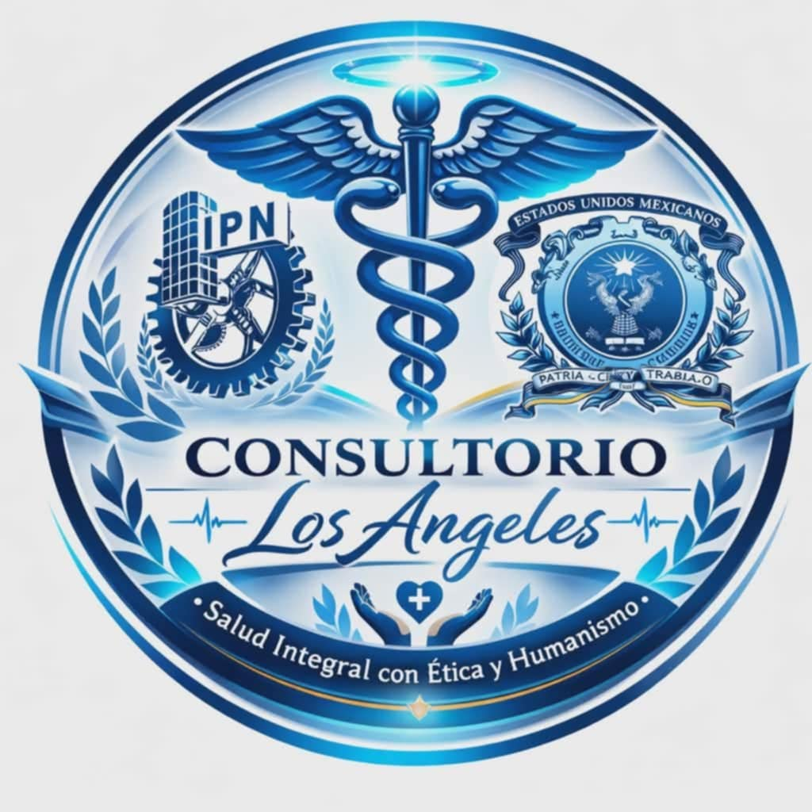

Medicina general
Valoración médica, diagnóstico inicial, tratamiento y seguimiento de padecimientos frecuentes.
Atención médica integral y especializada

En Consultorio Los Ángeles brindamos atención médica cercana, profesional y accesible, con servicios de medicina general y diversas especialidades para toda la familia.
Lunes a domingo
8:00 a 20:00
Francisco I. Madero #29
Col. Centro, Luvianos, México
Atención integral con enfoque humano, preventivo y especializado.
Valoración médica, diagnóstico inicial, tratamiento y seguimiento de padecimientos frecuentes.
Control y seguimiento de padecimientos como diabetes, hipertensión y otros problemas de salud crónicos.
Atención especializada en problemas venosos y evaluación de circulación periférica.
Orientación alimentaria y planes personalizados para mejorar hábitos, prevenir riesgos y apoyar tratamientos.
Atención médica infantil y evaluación de alergias para el cuidado integral de niñas y niños.
Atención de la salud femenina, prevención, diagnóstico y seguimiento especializado.
Atención especializada en salud mental con enfoque profesional, respetuoso y confidencial.
Apoyo en procesos de rehabilitación, recuperación funcional y tratamiento físico complementario.
Equipo médico del Consultorio Los Ángeles.
Especialista del consultorio
Especialista del consultorio
Especialista del consultorio
Especialista del consultorio
Nombre pendiente
Nombre pendiente
Consultorio Los Ángeles es un espacio de atención médica orientado al cuidado integral de las personas y las familias de la región. Nuestro propósito es ofrecer atención cercana, profesional y oportuna, integrando medicina general y especialidades que respondan a distintas necesidades de salud.
Trabajamos con un enfoque de confianza, responsabilidad y respeto, buscando que cada paciente reciba una atención adecuada y un seguimiento claro.
Dirección:
Francisco I. Madero #29, Col. Centro, Luvianos, México
Horario:
Lunes a domingo, 8:00 a 20:00
Teléfono:
PENDIENTE
WhatsApp:
PENDIENTE
Contáctanos para recibir información, resolver dudas o programar una cita.
Llamar al consultorio Escribir por WhatsApp